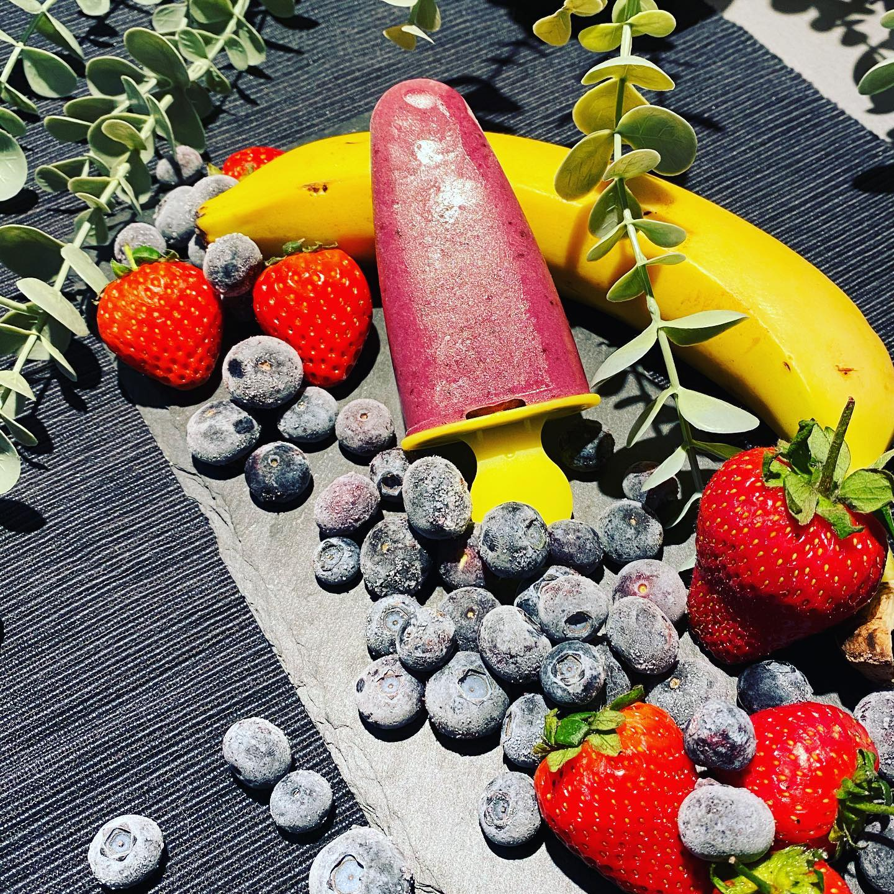

Ovocná zmrzlina podľa @nikca.v.kuchyni — Normy Jedál
DOMÁCÍ NANUK 🍓🫐🍌🥛🍦🧊
...moje deti to tak milujou a misto cukru maj zdrave ovoce...😍😍
...da se delat ze vseho samozrejme...
tenhle je bozi!!! a je z: bananu, jahod a boruvek, tvaroh, zakysanka trochu mlika a javorovy sirup (vse umixuju ve smoothiemakeru a dam do formicek do mrazaku)
#zmrzlina#domacizmrzlina#ovocnazmrzlina#ovocnysorbet#nanuk#domacinanuk#domacisorbet#zmrzlinaprodeti#nanukprodeti#ovoce#zmrzleovoce#banan#banany#jahoda#jahody#boruvky#javorovysirup#tvaroh#tvarohovazmrzlina#zdravazmrzlina#zdravastrava#veganfood#jídloproděti#detskastrava#mlsaniprodeti#zdravemlsani